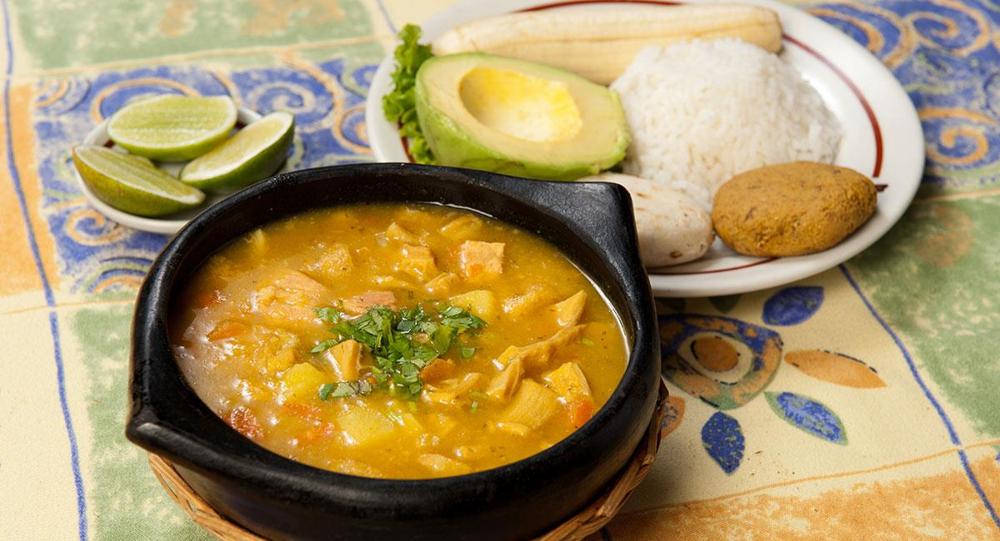

El mondongo es una sopa tradicional muy popular en Colombia y en varios países de Latinoamérica. Se prepara con callos de res, verduras y especias que le dan un sabor delicioso y muy casero. Es un plato ideal para compartir en familia.
Personas: 6
Tiempo de preparación: 120 min
INGREDIENTES
Lava muy bien el mondongo y córtalo en trozos pequeños. Ponlo a cocinar en una olla grande con suficiente agua y un poco de sal durante aproximadamente 40 minutos hasta que empiece a ablandar.
Mientras tanto, pela las papas y córtalas en cubos, pica la zanahoria en rodajas, la cebolla, el ajo y el pimentón en trozos pequeños.
Agrega las verduras a la olla junto con los garbanzos y deja cocinar a fuego medio durante otros 30 minutos hasta que todos los ingredientes estén bien cocidos.
Finalmente añade el cilantro picado, el comino y ajusta la sal al gusto. Deja hervir unos minutos más para que los sabores se integren bien.